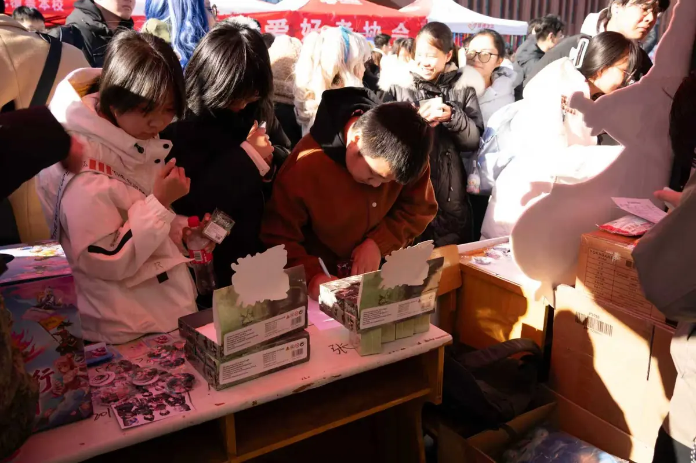
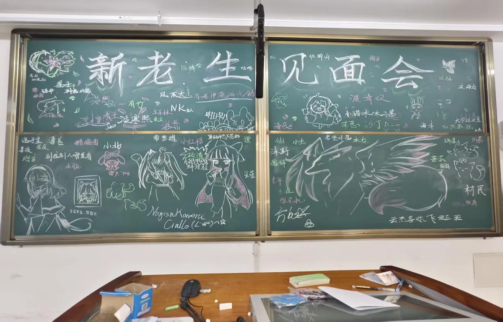

出角色、做道具、盯妆造。服化道自己动手，从选角到返图一条龙。
关于我们
一个以动漫文化为核心，融合 Cosplay、宅舞、绘画、配音、剪辑、摄影的综合性兴趣社区。这里写我们是谁、怎么运转，以及这一年多走过的路。
Who we are
把爱好做成可以一起参与的日常
花忆动漫社是山西电子科技学院的学生社团，现有注册成员 155 人，其中共青团员 64 人；覆盖大一至大四，专业横跨计算机、艺术设计、人工智能、机械工程、外语、生物食品、环境科学等二十余个方向。
社团的定位不是「一起看番」而已，而是把成员从单纯的消费者变成创作者：cos、宅舞、绘画、配音、剪辑、摄影，每个人都有能上手的位置。每周有线下动漫分享会，各部门定期开技能培训课，全学年培训累计超过 400 人次。
我们相信的四句话：因热爱而相聚，因创造而闪光，因分享而丰富，因成长而卓越。
本学年共举办各类活动 12 场，覆盖社员与校内师生超过 2000 人次。


How we work
一场活动，四步走
这套流程是八场活动一点点磨出来的，现在新社员照着做也能跑起来。
-
立项
先想清楚这场活动解决什么——是破冰、是普及，还是把人聚起来。
-
分工
场地、物资、物料、宣传各归各人，关键节点两两确认，避免最后一天才知道变了。
-
现场
提前布场验物料，现场留一个总调度，突发情况有人接手。
-
归档
当天收图，三天内写复盘，把经验放进下一次的清单里。
Departments
七个部门
没设门槛，进来先玩，玩着玩着就会找到自己的位置。社团支持跨部门参与，所以各部人数加起来会大于总人数。
零基础教学，从站姿、律动到成套，周训不缺席。
手绘、板绘、立牌与黑板报。活动现场一眼能看到的视觉，多半出自这里。
发声技巧与情感表达训练，负责宣传片配音、活动开场音频。
活动花絮、宣传片、Vlog 的后期，素材从摄影部来，成片从这里出去。
现场跟拍、后期修图，构图与布光有专题培训。
38 人，管物资、财务、场地与档案。活动能不能落地，多半看这一部。
Team
现任负责人
社团对外的事，找这两位同学对接。
环境工程 2403 班。统筹社团整体运营与对外联络，主导了「次元跃动·青春集结」校园漫展等大型活动。
负责社团思想建设与组织生活，统筹团支书协作与校级对接。
人员信息以实际换届结果为准；联系方式只在社内公布，本站不公开个人联系方式。
Timeline
大事记
从 2024 年冬天那场破冰之旅开始，到现在的每一场。
-
趣玩联盟 · 破冰之旅
团队游戏加话题讨论，100 余名新老成员在一晚上熟起来，社团的「家文化」从这里起步。
-
次元跃动 · 青春集结（校园漫展）
同人展销、Cos 自由行、宅舞接力、手作市集同时铺开，校内外 300 余人到场。看档案
-
动漫文化节
动漫知识竞赛、经典片段配音大赛、主题绘画工作坊，把教育与娱乐放在一起，200 余人参与。
-
博弈同游 · 共绘新章（桌游嘉年华）
十间小教室同时开桌，三国杀、狼人杀、PTCG 与剧本杀专场，赞助商也有专属教室。看档案
-
新老生见面会 · 次元初遇
70 人到场，人均认识 2.4 名同好，还从游戏里挖出了绘画骨干 3 人、摄影苗子 2 人。看档案
-
校园寻春 · 共赏新景
把寻宝和打卡搬进校园春景，收上来百余张返图，可回收物资回收率 100%。看档案
-
桌游派对 · 次元相聚
社内场，动漫 IP 主题桌游配经典桌游，不设门槛，坐下就能开一局。看档案
-
新老生见面会 · 次元初遇（下一场）
14:00—18:00，公共教学南楼大教室。谷子接龙、你画我猜、粉笔墙、桌游角与才艺展示。报名
How we run
财务与制度
零收费。本社团绝不向社员收取任何形式的会费，活动经费来源于学校划拨的社团活动经费与合规的校外赞助。
多级联签。所有支出走「经办人申请 → 部门负责人复核 → 后勤部长审核 → 社长审批」，每笔都有记录。
社长负责制。七大职能部门分工明确，日常事务各部门自决，重大事项由理事会表决。
公开透明。需要花销的内容都在社内公开，物品租借与购买配合学校相关流程。